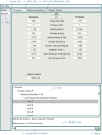
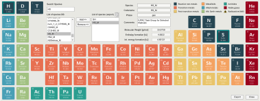
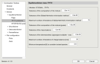

GUI#
Routines to generate the app, add-ons, assets, and all the necessary functions to be compatible with the plain code and extend its functionality.
Combustion Toolbox GUI#

Figure 1: Post-process of results using the GUI of the adiabatic combustion for a lean-to-rich acetylene (C2H2)-air mixture at standard conditions (T1 = 300 K and p1 = 1 atm); labels: name of the different components of the GUI. In particular, the numerical results correspond to phi = 0.5 (selected case in the tree component) [part 1].

Figure 2: Post-process of results using the GUI of the adiabatic combustion for a lean-to-rich acetylene (C2H2)-air mixture at standard conditions (T1 = 300 K and p1 = 1 atm); labels: name of the different components of the GUI. In particular, the numerical results correspond to phi = 0.5 (selected case in the tree component) [part 2].

Figure 3: Post-process of results using the GUI of the adiabatic combustion for a lean-to-rich acetylene (C2H2)-air mixture at standard conditions (T1 = 300 K and p1 = 1 atm); labels: name of the different components of the GUI. In particular, the numerical results correspond to phi = 0.5 (selected case in the tree component) [part 3].
Routines
- class combustion_toolbox#
Bases:
matlab.apps.AppBase- C = None#
Constants
- DB = None#
Reduced DataBase
- DB_master = None#
Master DataBase
- E = None#
Elements
- LS = None#
List of species considered (reactants + products)
- LS_products = None#
List of species considered as products
- LS_reactants = None#
List of reactants
- Misc = None#
Miscellaneous
- NS_display = None#
Number of display species (plots)
- NS_products = None#
Number of product species (computations)
- N_flags = None#
Number of flags active
- PD = None#
Problem Description
- PP1_var_name = None#
Variable name for PP1
- PP1_vector = None#
Condition Products 1
- PP2_var_name = None#
Variable name for PP2
- PP2_vector = None#
Condition Products 2
- PR1_var_name = None#
Variable name for PR1
- PR1_vector = None#
Condition Reactants 1
- PR2_var_name = None#
Variable name for PR2
- PR2_vector = None#
Condition Reactants 2
- PR3_var_name = None#
Variable name for PR3
- PR3_vector = None#
Condition Reactants 3
- PS = None#
Problem Solution
- S = None#
Species
- TN = None#
Tuning properties
- color_lamp_done = '[0.5608, 0.7255, 0.6588]'#
Lamp color (rgb): done
- color_lamp_error = '[0.9451, 0.5059, 0.5529]'#
Lamp color (rgb): error
- color_lamp_nothing = '[0.8000, 0.8000, 0.8000]'#
Lamp color (rgb): nothing to report
- color_lamp_working = '[0.9961, 0.9804, 0.8314]'#
Lamp color (rgb): working
- color_splash = '[0.5098, 0.6039, 0.6745]'#
Font color splash
- current_history = None#
Current history of commands
- default = None#
Struct with default values of some components in the GUI
- delete(app)#
Delete UIFigure when app is deleted
- dynamic_components = None#
Struct with all the dynamic components
- fig = None#
Auxiliary figure
- flag_PP1 = None#
FLAG for PP1: true-> vector
- flag_PP2 = None#
FLAG for PP2: true-> vector
- flag_PR1 = None#
FLAG for PR1: true-> vector
- flag_PR2 = None#
FLAG for PR2: true-> vector
- flag_PR3 = None#
FLAG for PR3: true-> vector
- flag_phi = None#
FLAG for phi: true-> vector
- ind_Fuel = None#
Index position Fuel species
- ind_Inert = None#
Index position Inert species
- ind_Oxidizer = None#
Index position Oxidizer species
- public_ProductsValueChanged(app)#
Update Listbox (extended settings)
- public_get_current_history(app)#
Get current history
- temp_index = None#
Temporal index to get current position of command history
- temp_results = None#
Temporal variable that contains the last parametric study
Utility functions#
A collection of functions for Combustion Toolbox GUI.
Routines
- gui_CalculateButtonPushed(app, event)#
Solve selected problem, update GUI with the results, and generate predefined plots
- Parameters:
app (
object) – Combustion Toolbox app objectevent (
object) – Event object
- Returns:
app (object) – Combustion Toolbox app object
- gui_ConsoleValueChanged(app, event)#
Print output of commands through GUI’s command window
- gui_FrozenchemistryCheckBoxValueChanged(app)#
Set frozen chemistry and update Listbox of species
- gui_ProblemTypeValueChanged(app)#
Clear GUI results tab (except UITree) and update GUI items for the problem selected
- gui_ProductsValueChanged(app)#
Update List of species considered as Products
- gui_ReactantsValueChanged(app, event)#
Update values of the UITable items with: * a given predefined set of reactants * the new species added in the finder
- gui_SnapshotMenuSelected(UIFigure)#
Routine to exports the current figure to a file. This function is called when the Snapshot menu is selected.
Notes
The file type is determined by the file extension
The file name is determined by the user
The file path is determined by the user
- gui_UITable_RCellEdit(app, event)#
Update values of the UITable items with the changes made
- gui_add_nodes(parent_node, results)#
Function that generate nodes in a UITree and save data on them
- Parameters:
parent_node (
object) – Parent node of the UITreeresults (
struct) – struct with the data to save in the nodes
- gui_add_nodes_validations(app, code_validation_name)#
Add nodes with the name of the validations routines into the corresponding tree in the UIValidation app
- Parameters:
app (
object) – UIValidation app objectcode_validation_name (
char) – Name of the validation code
- gui_check_temperature_reactants(app, DB, species, temperature, Nspecies)#
Check if is a condensed species with a fixed temperature
- gui_clear_results(app)#
Function that clears the result tab panel, setting them to 0
- Parameters:
app (
object) – Combustion Toolbox app object
- gui_compute_mach_or_velocity(app, inputname)#
Function that computes the pre-shock Mach number of the mixture from a given pre-shock velocity or viceversa.
- gui_compute_propReactants(app, self)#
Function that compute fundamental properties (e.g., equivalence ratio, molar fractions, …) of the mixture
- Parameters:
app (
object) – Combustion Toolbox app objectself (
struct) – Data of the mixture, conditions, and databases
- Returns:
self (struct) – Data of the mixture, conditions, and databases
- gui_create_temp_app(app, event, FLAG_COMPUTE_FROM_PHI)#
Function that creates a self struct required for preliminary calculations
- Parameters:
app (
object) – Combustion Toolbox app objectevent (
object) – Event objectFLAG_COMPUTE_FROM_PHI (
bool) – Flag to compute properties from the equivalence ratio
- Returns:
self (struct) – Struct containing the properties of the mixture and the databases
- gui_display_splash(varargin)#
Display splash using SplashScreen [1]
- Optional Name-Value Pairs Args:
app (object): Combustion Toolbox app object
color (float): Normalized RGB color (values from 0 to 1)
pause (float): Time to pause before deleting the splash [seconds]
- Returns:
splash_obj (object) – Splash object
References
[1] Ben Tordoff (2022). SplashScreen (https://www.mathworks.com/matlabcentral/fileexchange/30508-splashscreen), MATLAB Central File Exchange.
- gui_edit_phiValueChanged(app, event)#
Update moles and mole fractions of the reactant UITables for the given equivalence ratio
- gui_empty_UITables(app)#
Clear data UITables and set to default the value of the equivalence ratio (-)
- gui_fontcolor_error(app, item, MAX_ERROR)#
Change fontcolor of the given item if the value is greater than error_max
- gui_generate_panel_base(app)#
Routine that generates all the components to read the thermodynamic properties at different stages of the rocket
- gui_generate_panel_rocket(app)#
Routine that generates all the components to read the thermodynamic properties at different stages of the rocket
- gui_get_parameters(app)#
GET EQUIVALENCE RATIO
- gui_get_reactants(app, event, self, varargin)#
Get the species and the number of moles of the current data in UITable_R
- gui_get_tolerances(app)#
Get tolerance from GUI and update values
- gui_keep_last_entry(app, entry_app)#
Function that keeps only the last entry, i.e., if the order is entry1 and entry2, entry1 will be set to empty value
- gui_plot_custom_figures(app)#
Function that plot custom figures based on the parameters of the GUI’s custom figures tab
- gui_save_results(app, format)#
Save results as the given format (.xls or .mat)
- Parameters:
app (
obj) – class with all the data of the appformat (
char) – format extension/name
- gui_seeker_exact_value(app, event, ListValues)#
Return the value that match with the value introduced in the finder
- gui_seeker_value(app, event, ListValues)#
Return the value that match with the value introduced in the finder
- gui_update_UITable_R(app, self)#
Update data in the UITable_R with the next order: Inert -> Oxidizer -> Fuel
- gui_update_from_uitree(app, selectedNodes)#
Update GUI with the data that correspond with the selected node from the UITree
- gui_update_frozen(app)#
Set frozen chemistry and update Listbox of species
- Parameters:
app (
object) – Combustion Toolbox app object
- gui_update_phi(app, self)#
Update GUI: equivalence ratio, O/F, and percentage Fuel
- Parameters:
app (
object) – Combustion Toolbox app objectself (
object) – Data of the mixture, conditions, and databases
- gui_update_terminal(app, self, type)#
Update GUI command window depending on the type of message
- Parameters:
app (
object) – Combustion Toolbox app objectself (
struct) – Data of the mixture, conditions, and databasestype (
char) – Type of message to be displayed
- gui_value2list(app, value, LS, action)#
Add/remove (action) selected value to/from the list of species (LS)
- Parameters:
app (
object) – Combustion Toolbox app objectvalue (
cell) – Cell array of char containing the selected speciesLS (
cell) – Cell array of char containing the list of speciesaction (
char) – ‘add’ or ‘remove’
- Returns:
LS (cell) – Cell array of char containing the list of species after the action
Note
If value is empty, the function returns LS without any change
- gui_write_results(app, results, i, varargin)#
Update GUI with the results of the ith case solved
Add-ons#
The Add-ons included in CT are:
uielements: to select and analyse the species in the database. The species from Third Millenium Database [Burcat and Ruscic, 2005] are denoted with suffix _M (see Fig. 1).uipreferences: to set all the preferences of Combustion Toolbox (see Fig. 2).uifeedback: to report bug/inquiries of Combustion Toolbox (see Fig. 3).uivalidations: to reproduce all the validations of Combustion Toolbox (see Fig. 4).uiabout: to know who are the developers and get useful links (see Fig. 5).

Figure 1: Add-on uielements.
Routines
- class uielements(varargin)#
Bases:
matlab.apps.AppBase- C = None#
Constants
- DB = None#
Reduced DataBase
- DB_master = None#
Master DataBase
- E = None#
Elements
- FLAG_CALLER = None#
Flag app is called from other app
- LE_omit = None#
List of elements to omit
- LE_selected = None#
List of elements selected
- Misc = None#
Miscelaneous
- PD = None#
Problem Description
- PS = None#
Problem Solution
- S = None#
Species
- TN = None#
Tunning properties
- delete(app)#
Delete UIFigure when app is deleted

Figure 2: Add-on uipreferences.
Routines
- class uipreferences(varargin)#
Bases:
matlab.apps.AppBase- C = None#
Constants
- Misc = None#
Miscellaneous properties
- TN = None#
Tuning properties
- background_color = '[0.9098 0.9098 0.8902]'#
Backgound color of the app
- caller_app = None#
Handle to caller app
- delete(app)#
Delete UIFigure when app is deleted
- delta_x = '9'#
Left margin in the right panel
- delta_y = '-12'#
Top margin in the right panel
- dynamic_components = None#
Struct with all the dynamic components
- height_box = '22'#
Default box height;
- height_panel_0 = '38'#
Default height of the right panel [pixels]
- height_text = '14'#
Default box height;
- width_box = '60'#
Default box width;
- width_right = '521'#
Default width right panel
- x0_panel_right = '206'#
Initial positition of right panel in the x-axis [pixels]
- y0_panel_right = '428'#
Initial positition of right panel in the y-axis [pixels]

Figure 3: Add-on uifeedback.

Figure 4: Add-on uivalidations.
Routines
Figure 5: Add-on uiabout.